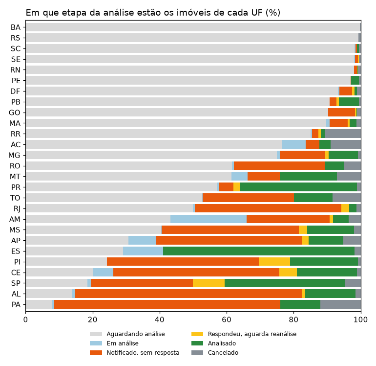
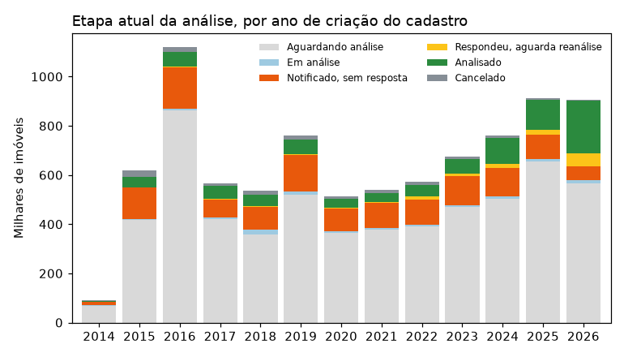
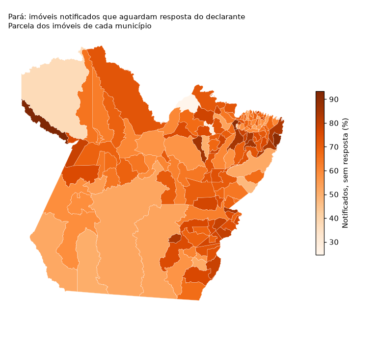
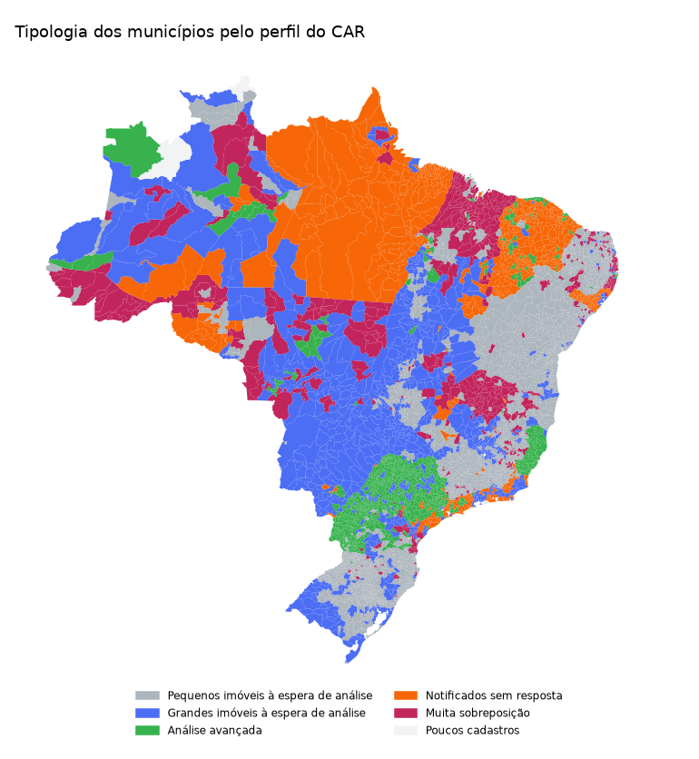

Onde a análise está parada¶
Cadastrar foi a parte rápida: o país tem mais de 8,5 milhões de imóveis no CAR. A
regularização depende do passo seguinte — o órgão estadual analisar o cadastro e o
produtor responder ao que a análise pede. Este guia usa a coluna condition, a etapa
da análise informada pelo Sicar, para mostrar onde cada UF está e quem espera por quem.
Tudo aqui sai do resumo pré-calculado (car_summary()), em segundos, menos o mapa do
fim, que lê duas colunas de um estado.
As etapas¶
O Sicar informa quinze situações de análise. Agrupadas em seis etapas:
import carbr
STAGES = ["Aguardando análise", "Em análise", "Notificado, sem resposta",
"Respondeu, aguarda reanálise", "Analisado", "Cancelado"]
def stage(condition):
if condition.startswith("Cancelado"):
return "Cancelado"
if condition == "Aguardando análise":
return "Aguardando análise"
if condition == "Em análise":
return "Em análise"
if "aguardando atendimento a notificação" in condition:
return "Notificado, sem resposta"
if "após revisão" in condition:
return "Respondeu, aguarda reanálise"
return "Analisado"
def by_stage(*by):
df = carbr.car_summary(["condition", *by])
df["stage"] = pd.Categorical(df["condition"].map(stage), STAGES)
return df.groupby([*by, "stage"], observed=False)["properties"].sum().reset_index()
national = by_stage()
national["share"] = (100 * national["properties"] / national["properties"].sum()).round(1)
national
stage properties share
0 Aguardando análise 5978517 69.7
1 Em análise 109355 1.3
2 Notificado, sem resposta 1309319 15.3
3 Respondeu, aguarda reanálise 134338 1.6
4 Analisado 874465 10.2
5 Cancelado 172067 2.0
Sete em cada dez cadastros ainda não foram analisados. Dos que foram, a maior parte parou no passo seguinte: há mais imóveis notificados à espera de resposta do declarante do que imóveis com análise concluída.
A fila não é a mesma em cada UF¶
palette = {"Aguardando análise": "#d9d9d9", "Em análise": "#9ecae1",
"Notificado, sem resposta": "#e8590c", "Respondeu, aguarda reanálise": "#fcc419",
"Analisado": "#2b8a3e", "Cancelado": "#868e96"}
states = by_stage("state").pivot(index="state", columns="stage", values="properties")
shares = states.div(states.sum(axis=1), axis=0).sort_values("Aguardando análise")
ax = (100 * shares).plot.barh(stacked=True, figsize=(7, 6.8), width=0.8,
color=[palette[s] for s in shares.columns])
ax.set_title("Em que etapa da análise estão os imóveis de cada UF (%)", loc="left")
ax.set_xlim(0, 100)
ax.set_ylabel("")
ax.legend(ncol=2, frameon=False, loc="upper center", bbox_to_anchor=(0.5, -0.05), fontsize=8)
fig("etapas")

Há três situações bem diferentes. Em parte dos estados quase nada foi analisado (cinza). Em alguns a análise andou e concluiu (verde). E em outros a análise andou, mas parou na notificação (laranja): o órgão fez a sua parte e a resposta não veio.
notified = states["Notificado, sem resposta"].sort_values(ascending=False).to_frame("properties")
notified["share_of_state"] = (100 * shares["Notificado, sem resposta"]).round(1)
top5 = 100 * notified["properties"].head(5).sum() / notified["properties"].sum()
print(f"As cinco primeiras UFs concentram {top5:.0f}% das notificações sem resposta")
notified.head(8)
As cinco primeiras UFs concentram 71% das notificações sem resposta
properties share_of_state
state
PA 265238 67.5
CE 203419 49.5
MG 161094 13.6
PI 153090 45.3
SP 144251 30.4
AL 97264 67.6
RO 53743 27.1
MS 37014 40.9
Quem está sem responder¶
waiting = by_stage("size_class")
waiting = waiting[waiting["stage"] == "Notificado, sem resposta"].drop(columns="stage")
waiting["share"] = (100 * waiting["properties"] / waiting["properties"].sum()).round(1)
waiting
size_class properties share
2 large 27771 2.1
8 medium 86308 6.6
14 small 1195240 91.3
Nove em cada dez são imóveis de até quatro módulos fiscais. É o público que menos tem acesso a técnico, a ferramenta de geoprocessamento e a quem explique o relatório da análise — e para quem a pendência no CAR pesa no crédito rural.
A notificação envelhece¶
Pelo ano de criação do cadastro, a resposta não chega com o tempo: de cada ano desde 2015, entre um oitavo e um quinto dos cadastros está parado na notificação, e os mais antigos não estão em situação melhor.
years = by_stage("created_year").pivot(index="created_year", columns="stage", values="properties")
ax = (years / 1e3).plot.bar(stacked=True, figsize=(7, 4), width=0.85, rot=0,
color=[palette[s] for s in years.columns])
ax.set_title("Etapa atual da análise, por ano de criação do cadastro", loc="left")
ax.set_xlabel("")
ax.set_ylabel("Milhares de imóveis")
ax.legend(ncol=2, frameon=False, fontsize=8)
fig("analise-anos")

Onde, dentro de um estado¶
O resumo vai até a UF. Para descer ao município, car_tbl() lê só as duas colunas
necessárias do arquivo do estado. No Pará, a UF com mais notificações sem resposta:
para = carbr.car_tbl("PA").aggregate(
"municipality_code, municipality, condition, count(*) AS n"
).df()
para["notified"] = para["n"].where(para["condition"].map(stage) == "Notificado, sem resposta", 0)
para = para.groupby(["municipality_code", "municipality"], as_index=False)[["n", "notified"]].sum()
para = para.rename(columns={"n": "properties"})
para["share"] = (100 * para["notified"] / para["properties"]).round(1)
para.sort_values("notified", ascending=False).head(6)
municipality_code municipality properties notified share
80 1505064 Novo Repartimento 12492 8782 70.3
65 1504208 Marabá 12935 8043 62.2
2 1500206 Acará 9267 7836 84.6
72 1504703 Moju 12009 7305 60.8
86 1505486 Pacajá 11170 7169 64.2
119 1507300 São Félix do Xingu 13174 6971 52.9
import geopandas as gpd
mesh = gpd.read_file(
"https://servicodados.ibge.gov.br/api/v3/malhas/estados/PA?intrarregiao=municipio"
"&formato=application/vnd.geo%2Bjson&qualidade=intermediaria"
)
mesh["municipality_code"] = mesh["codarea"].astype(int)
mesh = mesh.merge(para, on="municipality_code", how="left")
ax = mesh.plot(column="share", cmap="Oranges", edgecolor="white", linewidth=0.2,
figsize=(7, 6.4), legend=True,
legend_kwds={"shrink": 0.5, "label": "Notificados, sem resposta (%)"},
missing_kwds={"color": "#d9d9d9"})
ax.set_title("Pará: imóveis notificados que aguardam resposta do declarante\n"
"Parcela dos imóveis de cada município", loc="left", fontsize=10)
ax.set_axis_off()
fig("para")

É uma lista de onde um mutirão, um sindicato ou um serviço de atendimento ao produtor rende mais: municípios com muitos imóveis já analisados à espera de uma resposta que depende só de o declarante entender o que foi pedido.
Uma tipologia dos municípios¶
As etapas da análise, o porte dos imóveis e a sobreposição entre cadastros variam juntos,
e os municípios se parecem em blocos. car_typology() resume isso: cada município entra
num de cinco grupos, achados por agrupamento (k-médias) sobre sete indicadores do
cadastro. Os grupos ficam fixos de uma atualização para a outra, de modo que dá para
acompanhar um município mudando de grupo.
carbr.car_typology_groups()[["typology_label", "municipalities", "properties", "description"]]
typology_label municipalities properties \
0 Pequenos imóveis à espera de análise 2419 4120960
1 Análise avançada 976 1047289
2 Grandes imóveis à espera de análise 804 735672
3 Notificados sem resposta 732 1346341
4 Muita sobreposição 588 1154936
5 Poucos cadastros 44 592
description
0 Quase só imóveis pequenos, e a grande maioria ainda agua...
1 Boa parte dos cadastros já foi analisada ou está em anál...
2 A maior parte da área declarada está em imóveis grandes,...
3 A análise andou, mas a maioria dos cadastros espera a re...
4 Mais da metade dos imóveis tem a maior parte da área den...
5 Menos de 30 imóveis não cancelados: pouco para caracteri...
O perfil médio de cada grupo mostra de onde vêm os nomes:
typology = carbr.car_typology()
typology.groupby("typology_label")[
["small_share", "large_area_share", "waiting_share", "notified_share",
"analysed_share", "overlap_share", "coverage"]].mean().round(2)
import geopandas as gpd
from matplotlib.colors import ListedColormap
from matplotlib.patches import Patch
GROUPS = {
"Pequenos imóveis à espera de análise": "#adb5bd",
"Grandes imóveis à espera de análise": "#4c6ef5",
"Análise avançada": "#37b24d",
"Notificados sem resposta": "#f76707",
"Muita sobreposição": "#c2255c",
"Poucos cadastros": "#f1f3f5",
}
brazil = gpd.read_file(
"https://servicodados.ibge.gov.br/api/v3/malhas/paises/BR?intrarregiao=municipio"
"&formato=application/vnd.geo%2Bjson&qualidade=minima")
brazil["municipality_code"] = brazil["codarea"].astype(int)
brazil = brazil.merge(typology, on="municipality_code", how="left")
brazil["colour"] = brazil["typology_label"].map(GROUPS).fillna("#f1f3f5")
ax = brazil.plot(color=brazil["colour"], figsize=(7, 7.6), linewidth=0)
ax.legend(handles=[Patch(color=c, label=g) for g, c in GROUPS.items()], loc="upper center",
bbox_to_anchor=(0.5, 0.02), ncol=2, frameon=False, fontsize=8)
ax.set_title("Tipologia dos municípios pelo perfil do CAR", loc="left")
ax.set_axis_off()
fig("tipologia")

O mapa separa situações que pedem respostas diferentes. Onde a análise mal começou, o gargalo é a capacidade do órgão ambiental. Onde os cadastros estão notificados e sem resposta, é o atendimento ao declarante. Onde a sobreposição domina, é a qualidade do que foi declarado. E um estado pode ter mais de uma dessas situações: o grupo mais comum em cada UF,
top = typology.groupby("state")["typology_label"].agg(lambda s: s.value_counts().index[0])
top.value_counts()